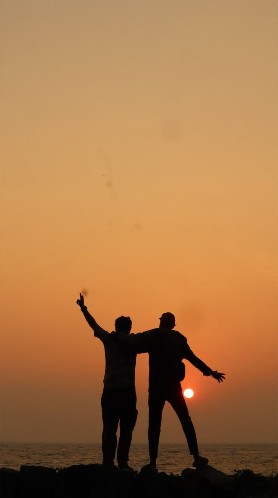

मित्रता दूरीभन्दा बलियो सम्बन्धमित्रताको अमूल्य बन्धन
साथी, तिमी जाँदैछौ सुन्दा मन एकदमै भावुक भएको छ। सँगै हाँसेका, रमाएका र दुःख–सुख साटेका दिनहरू सम्झिँदा मन भरिन्छ।
पूरा लेख पढ्नुहोस्
साथी, तिमी जाँदैछौ सुन्दा मन एकदमै भावुक भएको छ। हामीले सँगै बिताएका ती दिनहरू—सँगै हाँसेका, रमाएका, दुःख–सुख साटेका—सबै कुरा अहिले सम्झिँदा मन भरिन्छ। जीवनले हामीलाई फरक बाटोमा लगे पनि, हाम्रो मित्रताको नाता सधैं उस्तै बलियो रहिरहोस् भन्ने मेरो कामना छ।
टाढा भए पनि मनको दूरी कहिल्यै नहोस्। समय र दूरीले हाम्रो सम्बन्धलाई कमजोर होइन, झन् बलियो बनाओस्। तिमी त्यहाँ नयाँ सपना पूरा गर्न जाँदैछौ, त्यसका लागि धेरै धेरै शुभकामना। जहाँ रहे पनि खुसी रहनु, सुरक्षित रहनु, र आफ्नो लक्ष्यतर्फ अघि बढिरहनु।
मलाई थाहा छ, तिमी बिना यहाँ सबै कुरा अलि खाली–खाली लाग्नेछ, तर हाम्रो मित्रता सधैं साथमै हुनेछ। फोन, मेसेज, वा सम्झनामा भए पनि, हामी सधैं जोडिएका रहनेछौं। तिमीलाई धेरै मिस गर्नेछु, साथी।
सधैं यस्तै साथ दिइरहने, माया गरिरहने, र सम्झिरहने— तिम्रो साँचो साथी ❤️